El cómic de Oesterheld y Solano López (1957), contado con la técnica del pixel art de Stardew Valley.
Versión 2 · noviembre 2026
La idea
Lo que se ve es el cómic. Cómo se dibuja es Stardew.
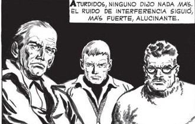
Contenido: el cómic. Caras, ropa, la casa de Vicente López, el traje. Todo sale de las viñetas y del guion.
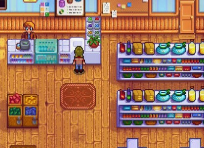
Técnica: Stardew. Vista 3/4 desde arriba, formas limpias, colores cálidos y mucho objeto chico en pantalla. Solo como referencia: no se copia nada.
Principios
Tres reglas
1
Fiel al cómic
Cada personaje se reconoce de una viñeta concreta. Si el cómic lo muestra, se dibuja así; si no lo muestra, no se inventa.
2
Simpleza con detalle
Zonas grandes de color plano y pocos píxeles de detalle, puestos donde mira el ojo: caras, manos, el reflejo del visor.
3
Escala chica
Grilla de 16 px y vista de 480×270. Muchos objetos chicos con espacio para caminar entre ellos, como en Stardew.
Técnica
Simpleza con detalle
3–4 tonos por material: base, sombra, sombra profunda y un brillo.
Sombras más frías (hacia el violeta) y luces más cálidas.
Contorno de color, un tono más oscuro que el relleno. Nunca negro puro.
Luz desde arriba a la izquierda, siempre. Sombra redonda bajo cada cosa.
Repetición con variación: cada tanto, una tabla de otro tono o un nudo en la madera.
Si se ve recargado, sacá píxeles. Si se ve chato, un brillo y una línea de sombra.
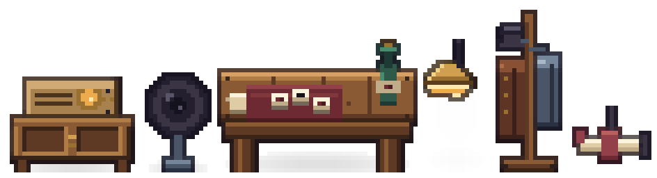
Escala
Todo vive en una grilla de 16 px
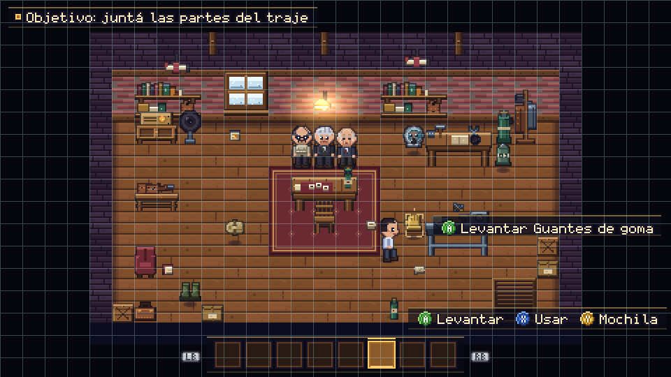
Vista
480×270, escalado entero
Personaje
1×2 baldosas (16×32)
Silla · radio
1×1 a 1×2
Mesa para cuatro
3×2
Ventana · puerta
2×2 · 1×2
Objetos chicos
8–16 px
Interiores
Compactos, entran enteros en pantalla
Exteriores
Mapas grandes; la cámara sigue a Juan
Interfaz
Chica: barra de 20 px, letra de 7 px
Color
Paleta
Noche fría y nieve azulada afuera; madera, ladrillo y luz de lámpara adentro. El contraste cálido/frío cuenta la historia: adentro se está a salvo, afuera la nieve mata.
Noche
#0b0c1d
#1b2440
#2e3c5a
#3a2a42
Nieve que brilla
#7896b0
#9fbfd4
#c8e2ee
#eefaff
Madera
#3a2418
#5e3a24
#8a5a34
#b07c46
Ladrillo
#5a2a30
#7a3a3a
#965050
#6a5a58
Luz de lámpara
#7a3c18
#b87028
#ecab4c
#ffe8b0
Piel
#8c5650
#bb7f68
#e2ab8c
#f4caa8
Personajes
El elenco
Rediseño completo a partir de las viñetas. Misma altura y proporciones para todos los adultos; Martita, un tercio más baja.
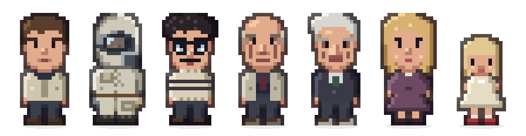
JuanTrajeFavalliLucasPolskyElenaMartita
Personajes · 01
Juan Salvo
El protagonista. Lo manejás vos.
En el cómic
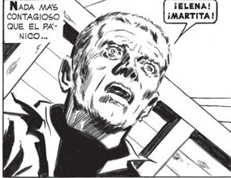
Retrato (diálogo)
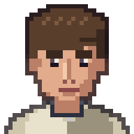
Sprite 16×32
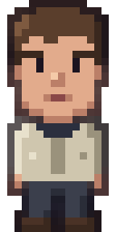
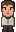
tamaño real · ×2
Rasgos clave
Mandíbula cuadrada, mentón duro, cejas marcadas.
Pelo corto, castaño medio, peinado con raya.
Campera clara con cierre sobre polera oscura de cuello alto.
Cara seria; casi nunca sonríe.
Personajes · 02
El traje
El ícono de la historia: sin él, la nevada mata.
En el cómic
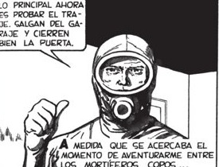
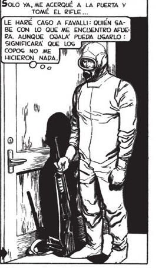
Retrato (diálogo)
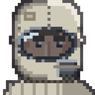
Sprite 16×32
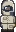
tamaño real · ×2
Rasgos clave
Casero: tela engomada clara cosida a mano, con parches.
Visera elíptica horizontal de marco grueso: se ve oscura, con los ojos de Juan.
Filtro hecho con una lata atada con alambre.
Tiras de goma enrolladas; un guante desparejo; rifle.
Personajes · 03
Favalli
El profesor de física. La cabeza fría del grupo.
En el cómic
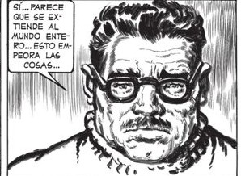
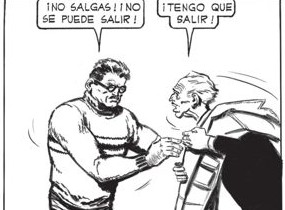
Retrato (diálogo)
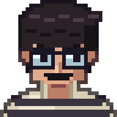
Sprite 16×32
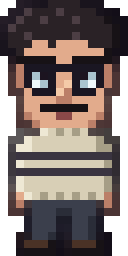
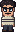
tamaño real · ×2
Rasgos clave
Anteojos de marco negro muy grueso: su firma.
Pelo oscuro, grueso y ondulado; bigote tupido.
Cara ancha y pesada, cejas espesas.
Sweater claro de cuello alto acanalado, con dos franjas oscuras en el pecho.
Personajes · 04
Lucas
Empleado de banco. El que entra en pánico.
En el cómic
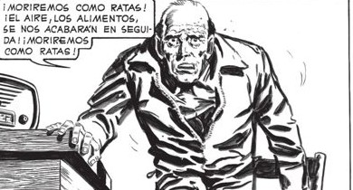
Retrato (diálogo)
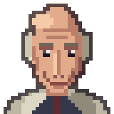
Sprite 16×32
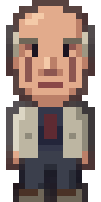
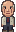
tamaño real · ×2
Rasgos clave
Flaco y alto, de mediana edad.
Pelado arriba, pelo claro y ralo a los costados.
Cara larga muy surcada: frente con arrugas, ojos hundidos, cejas pesadas.
Saco claro abierto sobre camisa y corbata oscuras.
Personajes · 05
Polsky
El jubilado vecino. Sale a buscar a su familia… y no vuelve.
En el cómic
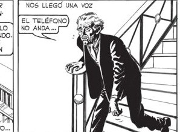
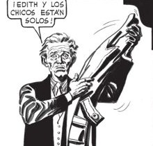
Retrato (diálogo)
Sprite 16×32
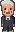
tamaño real · ×2
Rasgos clave
Viejo y flaco, encorvado; cara larga y huesuda.
Pelo blanco revuelto, peinado para atrás.
Nariz grande, ojos hundidos, mejillas marcadas.
Traje oscuro con camisa blanca y corbata.
Personajes · 06
Elena
La mujer de Juan.
En el cómic
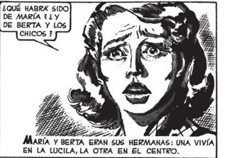
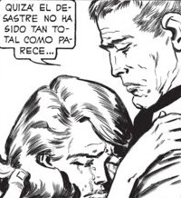
Retrato (diálogo)
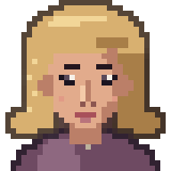
Sprite 16×32
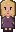
tamaño real · ×2
Rasgos clave
Pelo rubio ondulado hasta los hombros, con raya al costado.
Cara suave; labios marcados.
Vestido oscuro de mangas largas, con cuello claro.
Siempre cerca de Martita.
Personajes · 07
Martita
La hija de Juan y Elena.
En el cómic
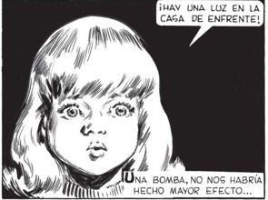
Retrato (diálogo)
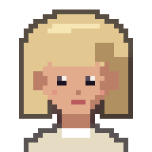
Sprite 16×32
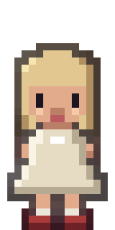
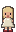
tamaño real · ×2
Rasgos clave
Nena chica: un tercio más baja que los adultos.
Pelo liso, rubio claro, con flequillo recto.
Vestido claro con cuello blanco, medias blancas, zapatitos rojos.
El único toque de rojo vivo en la casa.
Ambientes · en el juego hoy
El altillo y la casa
El altillo, el "laboratorio". Techo a dos aguas con vigas y avioncitos colgados, ladrillo a la vista, la radio y su parlante de embudo, y la mesa de truco bajo la lámpara.
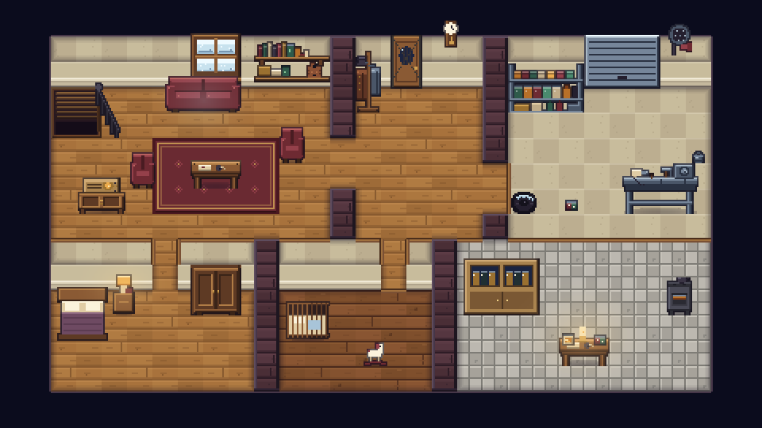
La planta baja (rediseño). Seis ambientes como en el cómic: living con escalera de baranda de hierro, hall con la puerta sellada, garage-esclusa, dormitorio, cuarto de Martita y cocina con azulejos.
Rediseño · animación
Caminar de verdad
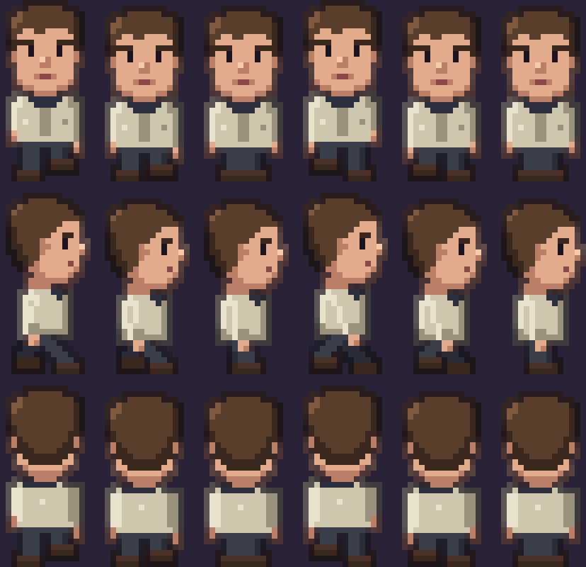
La caminata actual temblequea: la cabeza cambia de forma entre cuadros y las piernas casi no se mueven. La nueva:
6 cuadros por dirección, no 4.
Cabeceo que vende el paso: baja 1, baja 1, sube de golpe.
La cabeza nunca cambia de forma: solo se desplaza.
Tijera de piernas en el perfil, brazos al revés que las piernas.
Tiempos desparejos: el contacto dura 150 ms, los intermedios 95.
Prototipo animado en art/concept/out/walk_*.gif
Rediseño · el traje
El traje casero, como en la página 41
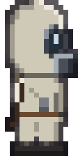
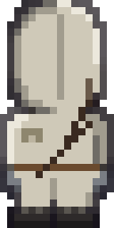
frenteperfilespalda
Lo cosen a mano en la casa (págs. 032–042): tela engomada clara con parches y costuras a mano · capucha · visera elíptica horizontal con marco tosco, bulones y alambre · filtro hecho con una lata atada · tiras de goma enrolladas en cuello, cintura y tobillos · un guante desparejo · rifle.
Rediseño · la calle
Vicente López, 1957, de noche
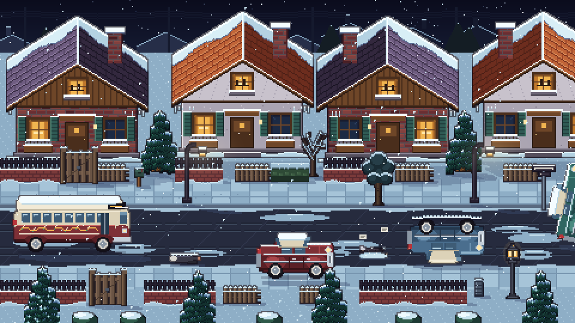
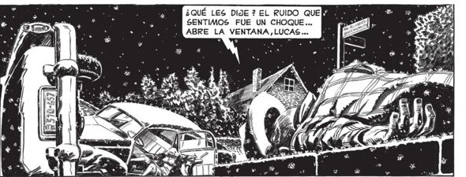
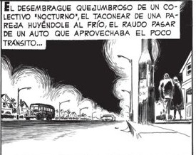
Fondo poblado: segunda fila de techos, chimeneas, tanques de agua, pinos, postes y cables.
Chalets con jardín y tapial de reja o cerco.
Farolas de brazo curvo, el colectivo nocturno detenido.
La esquina del choque con el cartel de calles; Polsky en la nieve.
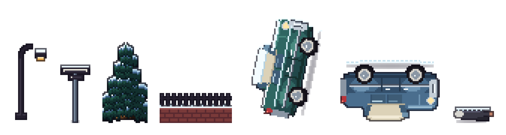
Rediseño · la planta baja
Una casa que se entiende
Arriba: living (escalera, ventana, sillón, radio) · hall (puerta con ojo de buey sellada, perchero, reloj) · garage-esclusa, la salida a la calle (pág. 040).
Abajo: dormitorio (cama, velador, ropero con el rifle) · cuarto de Martita (cuna, caballito) · cocina (azulejos, alacena con frascos, lámpara de aceite).
Paredes interiores vistas de frente, como en Stardew, para que cada ambiente se lea solo.
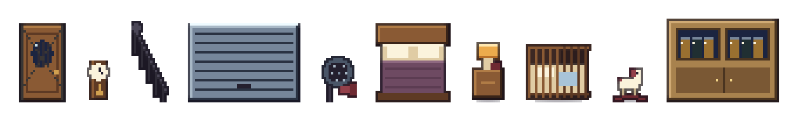
Rediseño · el garaje
El garaje-esclusa: por acá se sale
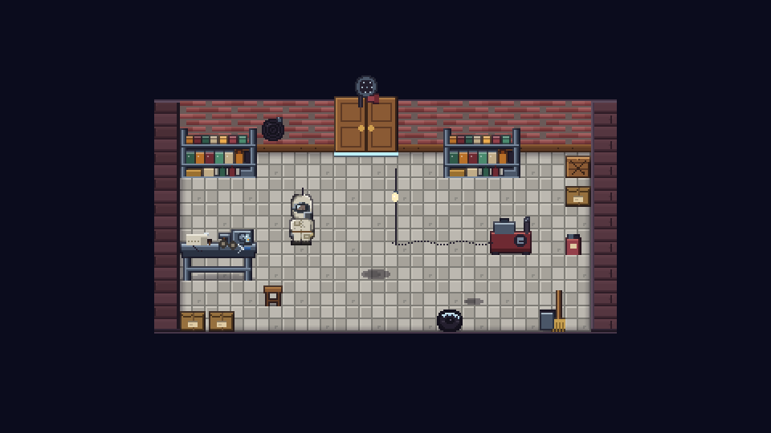
Como en las págs. 040–042: estantes con latas y frascos, la manguera enrollada, el neumático, el balde con la escoba, baldosas claras. La puerta de dos hojas a la calle con el extractor hecho con el secador de Elena; el traje colgado esperando a Juan; el banco con la tela engomada y las tiras de goma.
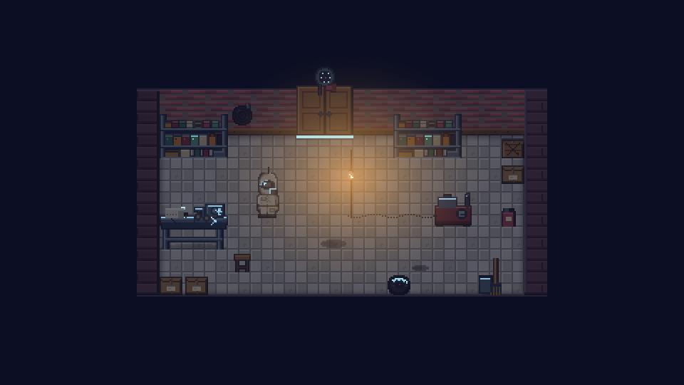
La única luz eléctrica de la casa: el electrógeno a nafta de Favalli alimenta una lamparita que cuelga del cable y titila. Por la rendija de la puerta se cuela la luz fría de la nieve.
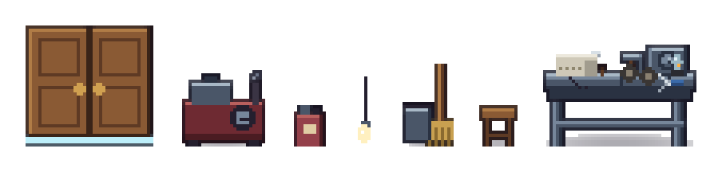
Rediseño · casas
Casas con otro nivel de detalle
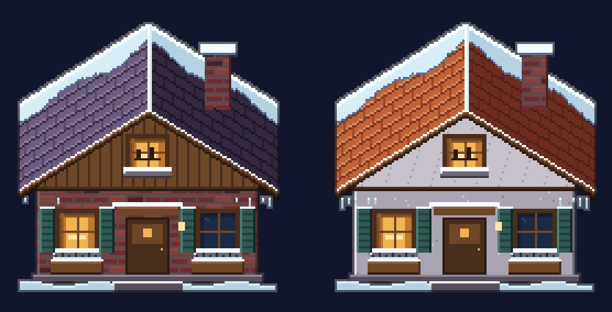
La perspectiva de Stardew: la fachada es el hastial de frente; los dos faldones se van hacia atrás subiendo en la pantalla, sin fuga. Cumbrera vertical, faldón izquierdo con luz y derecho en sombra, tejas en filas paralelas al borde.
La casa de los Salvo (pág. 030): planta baja de ladrillo, hastial de tablas con la ventana del altillo encendida (las siluetas del truco), chimenea sobre el faldón.
La californiana, típica del conurbano de los 40–50: revoque blanco y tejas coloniales.
La nieve se apoya en lo horizontal: el manto arriba del techo, la cumbrera, alféizares, maceteros, escalones.
Rediseño · árboles
Pinos con textura
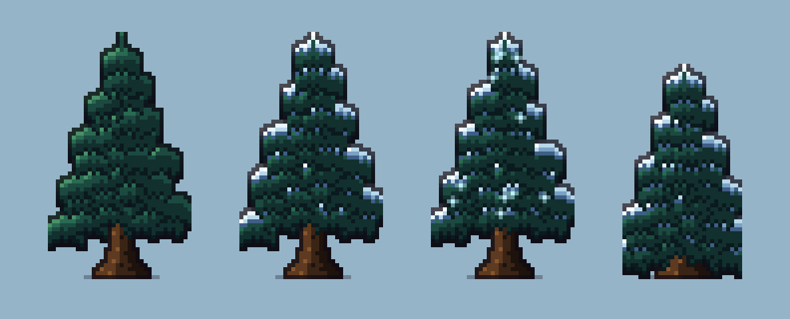
La textura sale de mechones de agujas que caen en capas: cada uno con luz arriba a la izquierda, panza en sombra y borde dentado. La silueta queda irregular, no un triángulo.
En la versión nevada, la nieve se apoya arriba de cada mechón; tronco con corteza veteada y raíces abiertas.
El tercero es el pino de la nevada: copos que brillan pegados a las ramas.
Rediseño · vehículos
Autos y colectivo de los 50
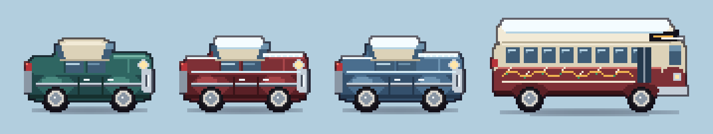
Vista 3/4 desde arriba, como el camión de Stardew: techo, capot y parabrisas se ven desde arriba con brillos; el costado más oscuro con la moldura cromada.
Sedanes de dos tonos con techo crema, cubiertas de banda blanca, paragolpes y parrilla cromados, faros redondos.
El colectivo bordó y crema, con cartel de recorrido y una guarda de fileteado porteño.
Rediseño · objetos
Mesas vestidas, objetos con sentido
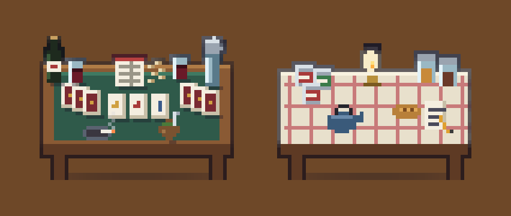
Cada superficie se viste con objetos chicos (4–12 px) que se leen por su silueta: naipes españoles, anotador con porotos, sifón, vino, el cenicero de Favalli humeando, el mate.
Cocina: mantel a cuadros, latas, frascos, pava, pan, la lámpara de aceite y la lista de Elena.
Los objetos que se juntan están apoyados donde tienen sentido: los guantes en el banco del laboratorio, la tela engomada a medio cortar con la tijera, la lata del filtro en la alacena, las botas junto al perchero. Un brillito avisa que se pueden agarrar.
Propuesta innovadora
Retratos de diálogo: el cómic en pixel art
Cada retrato sale del primer plano de su viñeta: el dibujo de Solano López pasado a 56×56 con 5 tonos, para que se note el pixel art del juego. Arriba en tinta, como el cómic; abajo a color, con sombras frías y luces cálidas como el resto del juego. Elena sale de la pág. 021 y Martita de la pág. 034.
En el juego: el sprite chico camina, y al hablar aparece el retrato grande, idéntico al cómic.
Propuesta innovadora
La vista desde el altillo
Basada en la panorámica de la pág. 020: el barrio visto desde arriba, todo cubierto por la nevada fosforescente.
Se arma con el motor del juego: los mismos sprites, en capas — nuestro techo nevado y la chimenea adelante, la calle al medio, las casas de enfrente y los techos lejanos atrás.
La vista es más ancha que la pantalla: la cámara se desliza despacio, como recorriendo la calle con la mirada.
El colectivo con los faros todavía prendidos, autos abandonados, la esquina del choque, gente caída y el cadáver sobre el tapial.
Propuesta innovadora
La vista desde el living
Hay dos ventanas y cada una muestra algo distinto. Arriba, el altillo da la panorámica. Abajo, el living mira a la altura de la calle (pág. 034):
Enfrente, la casa de los Ramírez (nueva, hermética) con la luz de una vela y la silueta de Ramírez con el candelabro.
Adelante, nuestro jardín: portón, tapiales, arbustos. En la calle, un auto tapado de nieve y alguien caído.
El cortinado bordó del living enmarca la vista.
Rediseño · el traje
Juan con el rifle
"No te olvides del rifle" (pág. 041): al salir, Juan lleva el rifle en las manos.
De frente, cruzado sobre el pecho; de perfil, apuntando hacia adelante mientras avanza; en el retrato, al hombro.
Culata de madera, caño de metal oscuro con un brillo; las manos enguantadas (una desapareja) lo agarran.
Iluminación
Se cortó la luz
Antes del corte (la partida de truco, pág. 018): luz eléctrica cálida, farolas y ventanas encendidas.Después del corte (pág. 019: "¿Algún fusible?"): no hay farolas ni ventanas eléctricas. La nieve es la luz: "emanaban una débil luz de trasmundo" (pág. 020). Solo quedan velas que titilan.
Iluminación
Velas, aceite y la nieve que brilla
Adentro: una vela sobre la mesa ilumina las caras; la lámpara de aceite en la cocina; el electrógeno a nafta de Favalli (pág. 041) da la única luz eléctrica, inestable, en el taller. La ventana brilla fría por la nieve de afuera. (El HUD no se oscurece en el juego.)Afuera: todo oscuro salvo la nieve, que tiñe de cian lo que tiene cerca, y una sola luz cálida en el barrio: la vela de Ramírez. Por eso Martita la ve enseguida (pág. 034).
Propuesta innovadora
Contarlo como una historieta
Globos y cartuchos. Los personajes hablan en globos rotulados en mayúsculas, con la cola hacia quien habla. El Eternauta narra en cartuchos amarillos, como en el cómic. El HUD de abajo queda como está.Escenas en viñetas. En los momentos clave (el choque, la muerte de Polsky, la primera salida) la pantalla se parte en viñetas con primeros planos de nuestros personajes (el modelo del juego) y medianiles; se avanza con (A). Los retratos calcados del cómic quedan para el diálogo.
Interfaz
Botones de joystick, chiquitos
Botones redondos gorditos con aro oscuro y letra blanca: A, B, X y Y. Gatillos y bumpers grises, cruceta oscura. Si jugás con teclado, se cambian solos por teclitas.
Corregir las letras de START y BACK en el tamaño grande.
La X grande se lee como un 8.
Referencia de estilo elegida.
Cómo seguimos
Plan de construcción (DeepSeek)
1
Personajes
Los 7 sprites nuevos con la caminata de 6 cuadros en 4 direcciones; retratos de diálogo sacados del cómic; Juan con el traje casero y el rifle.
2
Escenarios
Calle con casas de hastial de frente, autos, pinos y el choque; planta baja; garaje-esclusa como salida; mesas vestidas y objetos donde tienen sentido.
3
Luz
Antes y después del corte: la nieve como fuente de luz, velas y lámpara de aceite que titilan, la lamparita del electrógeno.
4
Historieta
Globos y cartuchos, escenas en viñetas, y las dos vistas por la ventana (altillo y living).
Cada paso se revisa con capturas al lado del concepto y de la viñeta. Archivos: art/concept/ (generadores y PNGs) · docs/guion.md · docs/referencias_visuales.md.